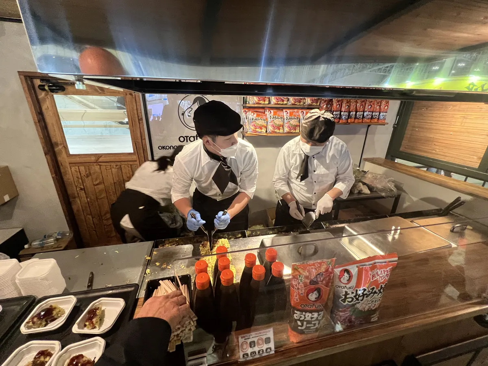
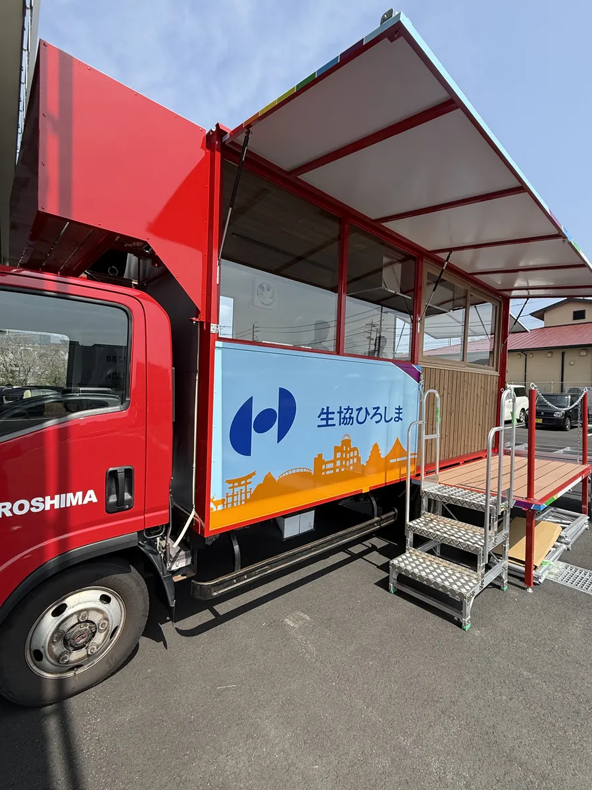

場所と用途を、先に確かめる。
土地・用途・必要な手続きを、設計前に整理します。
TOWN DESIGN LABO / TRAILER HOUSE
店舗・宿・別荘に。
土地と使い方から設計するトレーラーハウス。

TOWN DESIGN LABO の設計実績
キッチンカーの設計・製造ディレクション実績。

キッチンカー ／ お好み焼きの実演

キッチンカー ／ イベントでの活用
ここでご紹介した2件は、キッチンカーの設計実績です。
トレーラーハウスの用途と空間を見る ↓使い方から考える
製造パートナーの事例から、使いたい空間を探す。


導入費用
本体参考価格と設置費用。総額は個別にお見積もりします。

土地と搬入
土地の条件 ／ 搬入経路 ／ 電気・給排水
設置や営業の可否は、土地・用途・自治体の取扱い等により異なります。
設置条件と確認の進め方 →行政窓口に相談する前の8項目 →土地・用途・必要な手続きを、設計前に整理します。
TDLが図面と仕様をまとめ、千葉県の製造パートナーと製作を進めます。
修繕・改修・移設もご相談ください。対応方法と費用を個別に確認します。
ご依頼の流れ
土地・用途・予算を整理
条件と総額を確認
パートナーと工程を確認
搬入・引き渡し
会社案内
FAQ
内容や仕様によりますが、初回相談から設計・製造・陸送・引き渡しまで、標準的には3〜6か月ほどが目安です。仕様の複雑さや製造の混み具合により前後します。まずはご希望の時期をお聞かせください。
随時かつ任意に移動できる状態（工具を使わずに着脱できるライフライン接続、公道までの移動経路の確保、適法に公道を走行できる車両であること等）を維持する場合、建築基準法上の「建築物」に該当せず、建築確認申請が不要となるケースがあります。判断は自治体（特定行政庁）により異なるため、事前相談から当スタジオがサポートします。基礎等で土地に固定する場合は建築物に該当する可能性があり、規模・用途等に応じて必要な手続きを確認します。
随時かつ任意に移動できる車両として設置する場合、設置できるケースがあります。可否は自治体判断となるため、事前相談から当スタジオがサポートします。
参考価格（税込）は、トレーラーハウスが¥7,480,000〜、フードトラック・キッチンカーが¥4,950,000〜、モバイルショップ・移動工房が¥5,720,000〜、定置型ユニットが¥4,180,000〜です。仕様により変動し、陸送費・登録費・設置工事費・特別仕様は別途（税込にてお見積もり）。詳細は個別お見積もりでご案内します。
TOWN DESIGN LABOは広島県廿日市市を拠点に、関西・中国・四国・九州エリアの案件を中心に設計・ディレクションを担います。製造は千葉県の製造パートナーが行い、北海道から九州まで全国への陸送実績があります。
はい。営業許可を見据えた厨房レイアウト（設備・電源容量・配管・換気）を業態に合わせて設計します。飲食営業には食品衛生法、宿泊営業には旅館業法等の許認可が別途必要で、要件の洗い出しから設計段階でご案内します。
はい。構想段階からご一緒します。初回相談・お見積もりは無料です。ご用途・設置場所・ご予算感・ご希望時期をお聞かせいただければ、図面・仕様書・概算見積もりをご提示します。
車両を陸送して据え付けるため、設置場所までの搬入経路（道幅・高さ・曲がり角・地面の状態）の確認が欠かせません。また建築基準法上の「建築物」に該当させない運用を選ぶ場合は、公道までの移動経路を確保しておく必要があります。傾斜地や自然立地でも設置できるケースがありますので、候補地が決まっていれば写真や図面をもとに初期段階で確認します。
電気・給排水などの接続方法を、用途と設置場所の条件に合わせて計画します。断熱・床暖房・水回り・電源容量まで、用途に応じて設計・実装できます。ただし「随時かつ任意に移動できる車両」として設置する場合は、工具を使わずに着脱できる接続方法を維持する必要があるため、その条件を設計前に確認します。
はい。引き渡し後の点検・修繕・軽微な改修に対応します。改修・移設のご相談も継続的にお受けします。可動建築の利点は後から動かせることなので、将来の移設まで含めて設計段階からご相談いただけます。
キッチンカーであれば可能です。自社で設計・保有する車両を月額で貸し出す「KAZARI KITCHEN」を運営しており、リースは月額76,000円〜（軽トラ・税抜、別途 車検・車両整備費・消費税）です。実際の営業で分かった課題を、新しい車両の仕様に反映できます。
ご相談
初回相談・お見積もりは無料。土地や用途が未定でもご相談ください。
キッチンカーの製作・リース